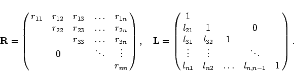
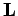
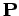
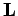
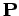
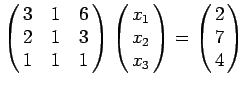

Inhalt Index DeskTop Bronstein

 Numerische Mathematik Numerische Lösung von Gleichungssystemen Lineare Gleichungssysteme Dreieckszerlegung einer Matrix
Numerische Mathematik Numerische Lösung von Gleichungssystemen Lineare Gleichungssysteme Dreieckszerlegung einer Matrix


Das Ergebnis des GAUSSschen Eliminationsverfahrens kann wie folgt formuliert werden: Zu jeder regulären Matrix  existiert eine sogenannte Dreieckszerlegung oder LR-Faktorisierung der Form
existiert eine sogenannte Dreieckszerlegung oder LR-Faktorisierung der Form
|  | (19.32) |
 heißt Rechtsdreiecksmatrix,  Linksdreiecksmatrix und  ist eine sogenannte Permutationsmatrix. Sie ist eine quadratische Matrix, die in jeder Zeile und in jeder Spalte genau eine 1 und sonst Nullen enthält. Sie beschreibt die Zeilenvertauschungen in der Matrix
heißt Rechtsdreiecksmatrix,  Linksdreiecksmatrix und  ist eine sogenannte Permutationsmatrix. Sie ist eine quadratische Matrix, die in jeder Zeile und in jeder Spalte genau eine 1 und sonst Nullen enthält. Sie beschreibt die Zeilenvertauschungen in der Matrix  , die sich durch die Pivotwahl in den Eliminationsschritten ergeben.
, die sich durch die Pivotwahl in den Eliminationsschritten ergeben.
| Beispiel |
|
Das GAUSSsche Eliminationsverfahren soll auf das System  angewendet werden. In einer schematischen Schreibweise, bei der die Koeffizientenmatrix und der Vektor der rechten Seite zu einer sogenannten erweiterten Koeffizientenmatrix zusammengefaßt werden, erhält man: |